절대 환상에 빠지다
2005 스톤앤워터 신진작가지원 프로그램 로칼놀이 프로젝트 III
2005_0715 ▶ 2005_0730
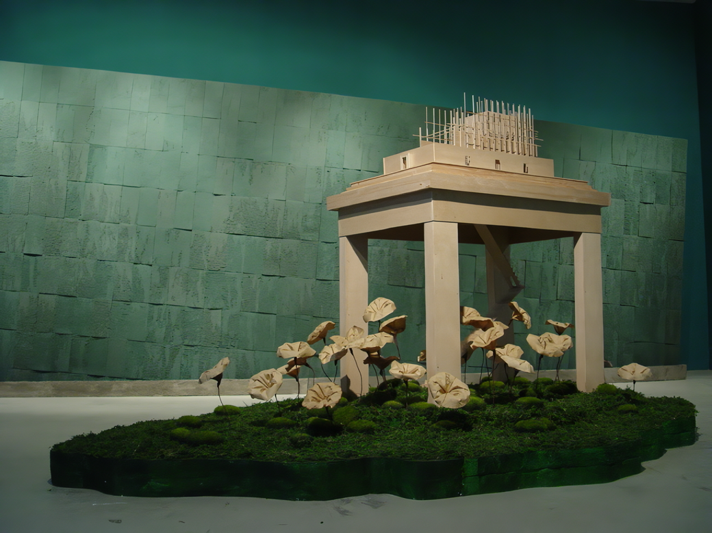
초대일시_2005_0715_금요일_06:00pm
후원_경기문화재단_문예진흥원
스톤앤워터
경기도 안양시 만안구 석수2동 286-15
Tel. 031_472_2886
www.stonenwater.org
어느 해인가 스치듯 지나가는 그것의 환영으로 몸부림치던 나의 그 시절도 그렇게 지나가 버렸다. 꿈으로 가득 찼던 환상은 어느 샌가 머릿속에 깊이 자리를 잡고 보이지 않는 열광으로 꿈틀대며 시간 속에 뿌리를 내렸고, 그 고정된 상념으로 지쳐갈 즈음, 움켜지던 손을 들어 내던짐에 그것은 수면 아래로 가라앉는다. 환상이자 허상이었던 내 오래된 유토피아는 그렇게 사라진다... 내 이전의 세계... 고통의 천국...
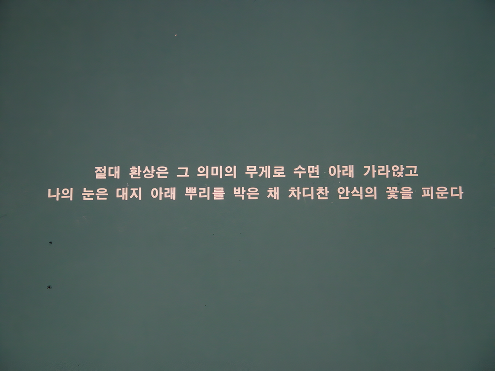
그 빈 자리를 메우기 위해 내 안의 성을 짓고 불신과 불완전의 입방체를 쌓아올리며 푸른 눈의 괴물-욕망-을 살찌우지만, 보이지 않는 것에 귀 기울임에, 작은 생각 하나가 씨를 뿌려 꽃을 피우고 그 꽃이 퍼져 작은 섬을 이루어 세상의 모든 경계 위에 유유히 부상하여 자유로이 나아간다. 섬은 개개인의 플라시보이며 유토피아이고 또 하나의 절대환상이다.
절대산수 ● 상징적, 관념적 유토피아로의 산수(山水)를 오아시스에 나타내고 우연한 효과로 만들어진 오아시스 조각을 재조합하여 거대한 절대산수를 제작한다. 이것은 바닥으로 기울어져 있어 그 끝이 가라앉는 듯 보인다. 산수 틀의 하단부에 설치된 홈으로 물을 부어 오아시스가 빨아들이게 하면, 충분한 양의 물을 흡수한 오아시스는 전시기간동안 공기 중으로 수분을 방출하며 서서히 변색되어간다. 우리가 절대 환상이라 믿고 있는 유토피아는 변색되기 쉽고 변형되기 쉬운 오아시스처럼 불완전한 허상일 수 있는 것이다.
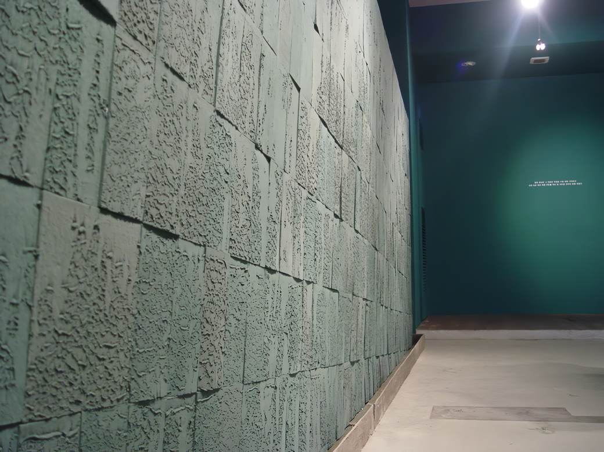 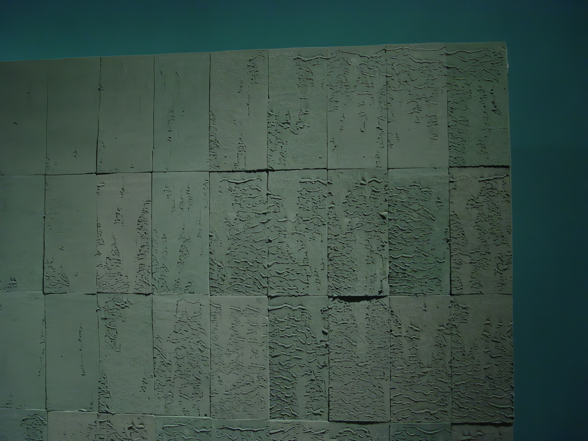 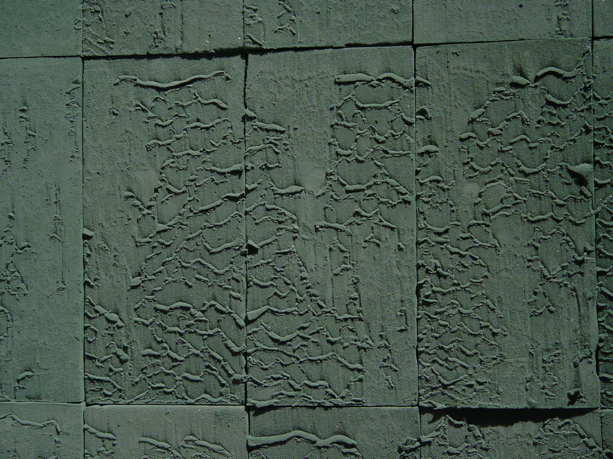
꽃섬 ● 인간은 누구나 자신만의 욕망을 갖는다. 유토피아에 가까워지기 위해 성전을 짓고 그에 대한 불안과 불신으로 그 내부에 다시금 무언가를 짓는다. 그러나 우리는 이러한 보이는 것을 보지 아니하여 보이지 않는 소소한 것에 주목할 필요가 있다. 그리하여 그 끝을 잡고 보이는 것의 경계에 이르러 작은 길을 따라 가다보면 낯선 섬에 다다르는데, 이는 내 잠재의식 속의 상상과 일상의 작은 생각들이 씨를 뿌려 꽃을 피운 꽃섬이다. 누구나 자신의 내부에 귀 기울이면 다가갈 수 있는 자기만의 섬.
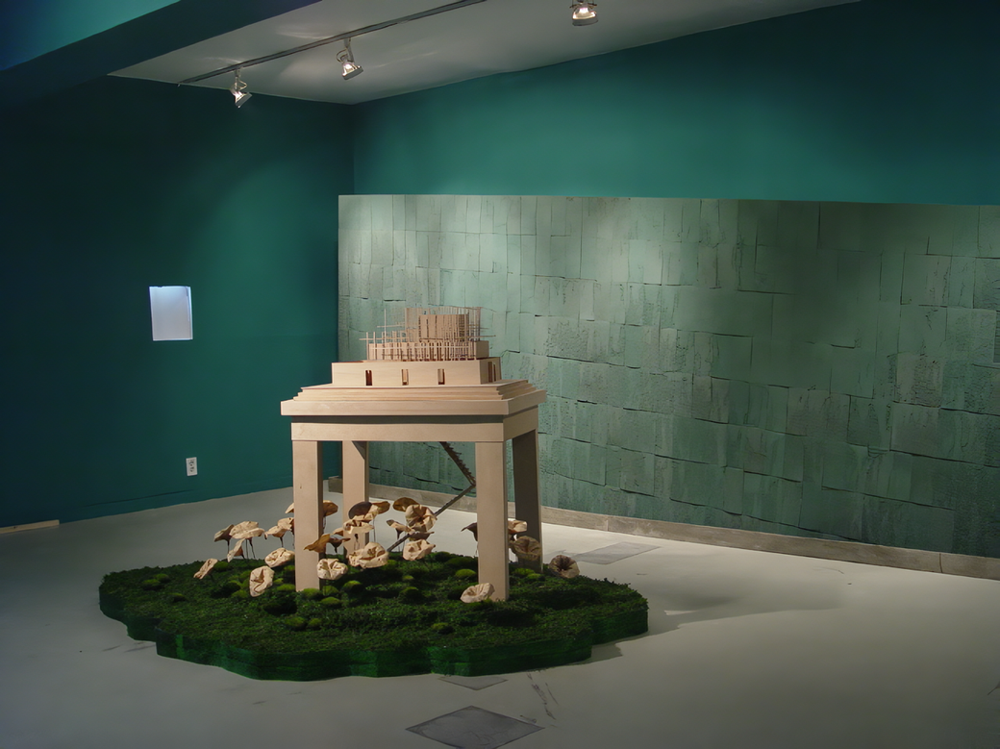 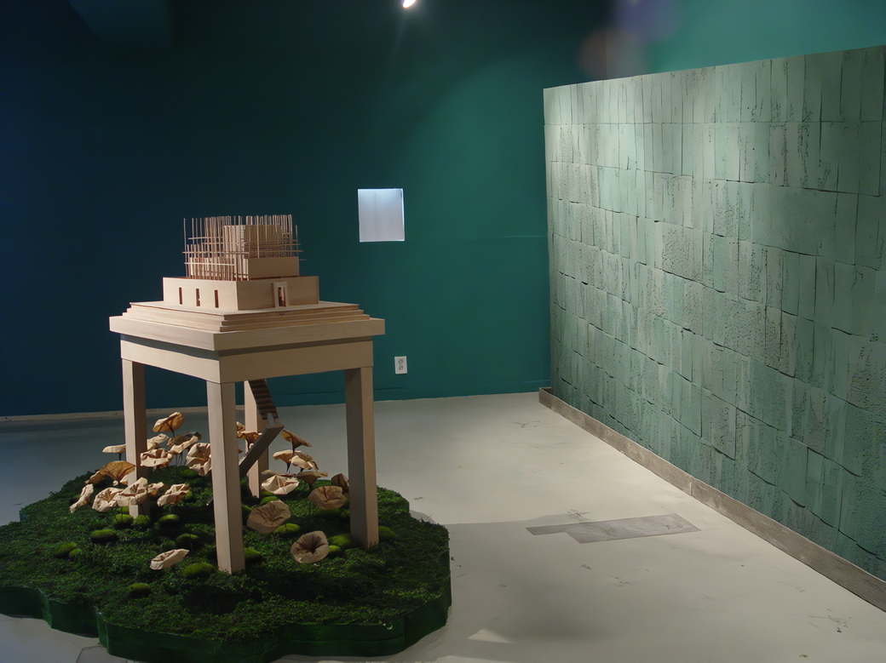 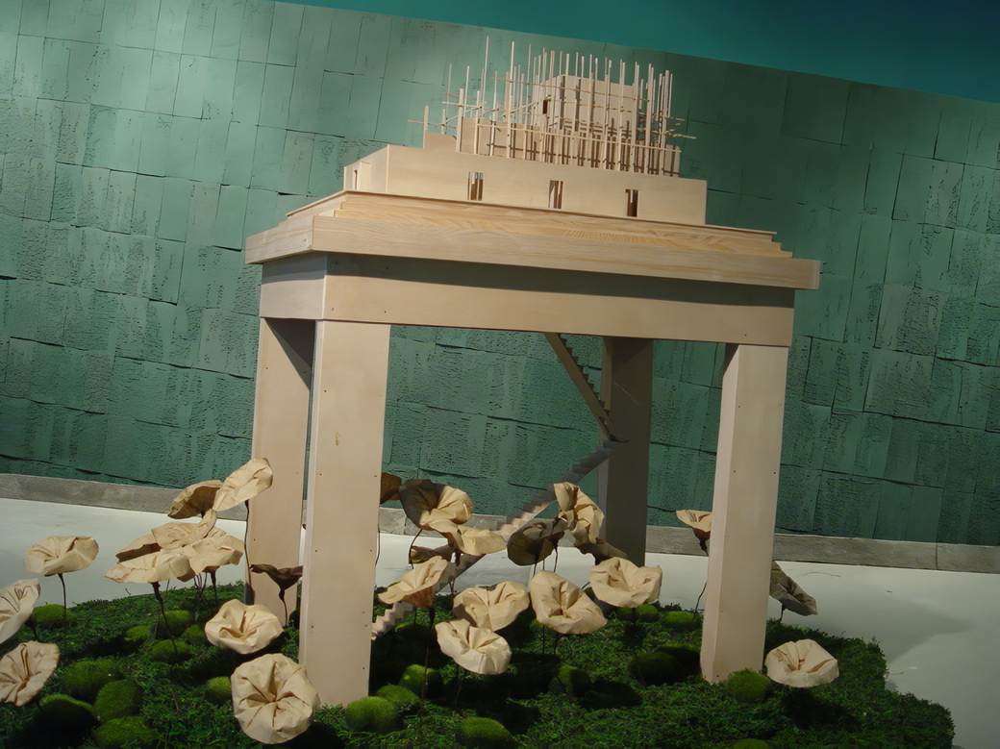
절대환상에 빠지다... ● 세상의 모든 유토피아는 플라시보다. 그럼에도 있지도 않은 이름을 들먹이며 갈망하는 것은 경험하지 못한 환타지를 향유하고 싶은 인간의 나약함 때문이리라. 그러기에 멀리 있는 유토피아 대신 내안의 유토피아, 내 일상의 유토피아를 꿈꾸어 본다. 그리하여 언제든 떠나고 언제든 머물 수 있는 작고 비중 없는 나만의 꽃섬을 만들어 그 안으로 낮은 잠수를 탄다.
■ 박선희
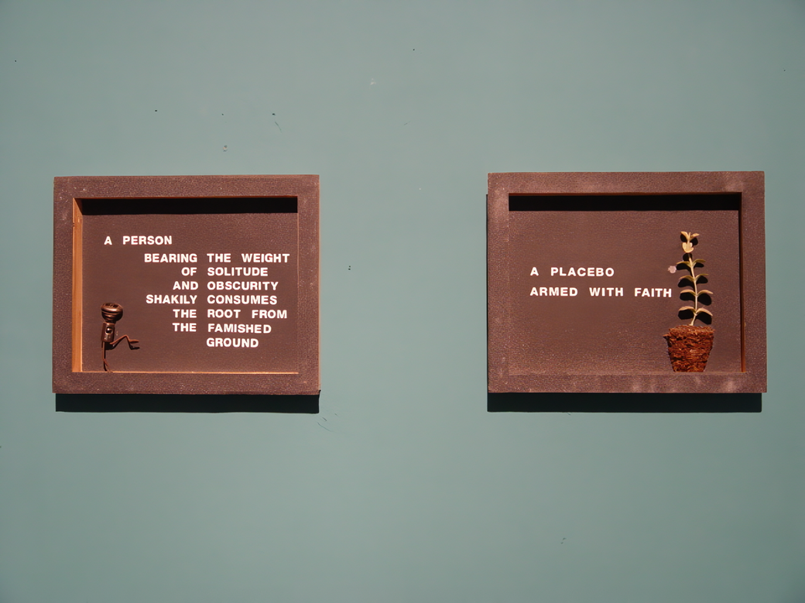 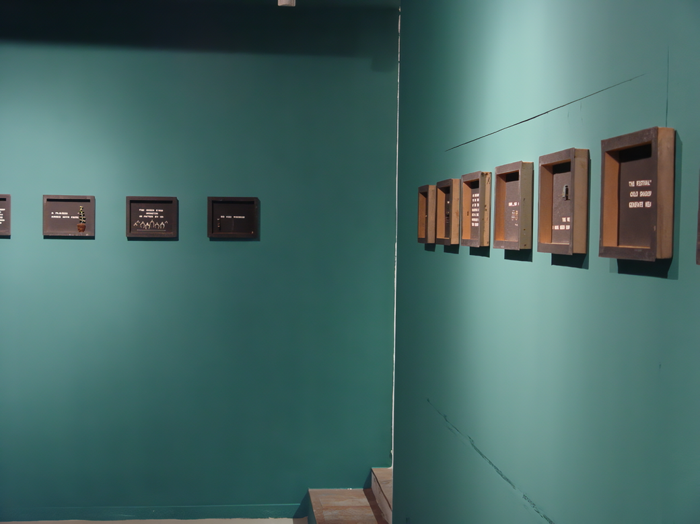 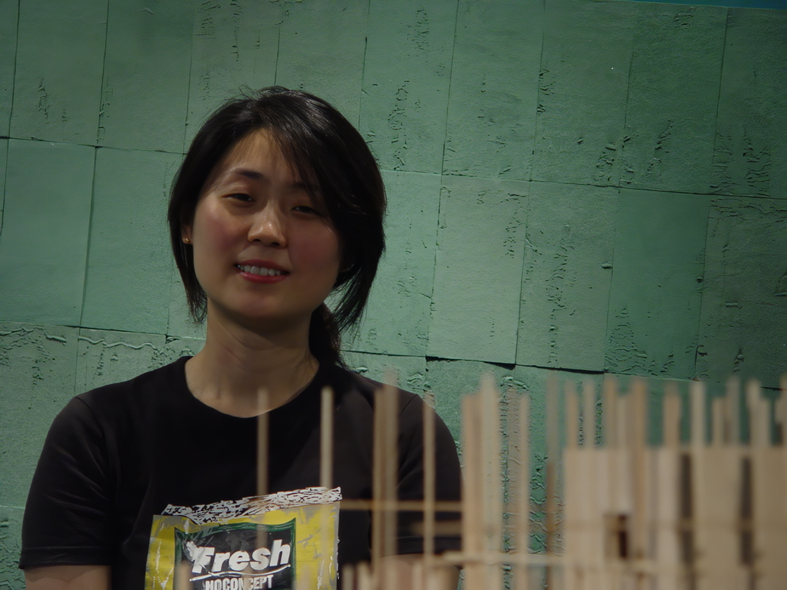
작가 박선희는 '유토피아에 대한 환상'을 작업의 기초적인 모티브로 삼고 있다. 특히 그녀는 개인적인 유토피아에 초점을 맞춘다. 누구나 유토피아를 구축하고 그 환상으로부터 위안을 찾는다는 것이다. 그 환상이란 그 자신의 '욕망'일 수 있고 '꿈'일 수도 있고, 심지어 '잠재의식'일 수도 있다. 작가의 생각에 의하면 세상의 모든 유토피아(개개인의 유토피아를 포함해)는 '플라시보'이다. 플라시보(Placebo)란 '만족시키는' 또는 '즐겁게 한다'는 뜻을 가진 라틴어에서 그 어원을 찾을 수 있는데, 의학계에서 '가짜 약'이라는 용어로 정착되었다. 다시 말해 설령 (병리학적으로) 진짜 약이 아닌 가짜 약임에도 불구하고 '만족할 만한' 치료효과 가져다준다면 그것 역시 하나의 의학적인 치료결과로 인정할 수 있다는 것이다. 이것은 물리적 사고로부터 심리적 사고영역으로 인간의 질병문제를 다루는 것으로 진짜와 가짜의 문제를 희석시키기에 충분하다. 문제는 그것이 혹은 무엇이 진짜다 가짜다라는 진위판단의 문제라기보다는 그것이 어떻게 그러한 작용을 일으켰는가에 초점이 맞춰진다. 박선희는 이 문제에서 '절대'라는 수식을 통해 그러한 진위문제를 벗어나 '확고하게' 유토피아(플라시보)를 인정하면서 그것을 경계하는 것보다는 '탐색하기'를 제안한다. 아마도 그녀가 "절대환상에 빠지다"라고 말하거나 "그 안으로 낮은 잠수를 탄다"라고 했을 때, 그것은 일종의 고정되어 있는 절대적 시선을 통한 탐색이라기보다는 '미끄러지는' 유동적인 탐색이라 할 수 있다. 그녀가 구축한 '절대산수'가 한쪽으로 기울어지는 것과 '꽃섬'의 성전이 아직 미완성이라는 점에서 그녀의 '미끄러지기'는 모든 유토피아는 결국 플라시보(가짜 약)이라는 인식을 반영하는 것과 같다. 이러한 박선희의 유토피아의 플라시보적 성격이 '안양(安養)'이라는 불교적 유토피아를 지칭하는 안양시에 위치한 스톤앤워터에서 열린다는 것이 흥미를 더할 수 있으리라 본다. 극락세계인 안양과 대비되는 사바세계, 즉 '고통을 참고 견디어가야 하는 세계'에서 플라시보(가짜 약)는 반드시 필요한 무엇이라 할 수 있는데, 결국 사바세계(우리의 세계)는 결국 안양(이상적 세계)이며, 이 두 세계의 합일 속에서 플라시보는 극락에 대한 하나의 믿음의 씨앗이라 할 수 있을 것이다. 그녀의 중얼거림처럼... ● "어느 해인가 스치듯 지나가는 그것의 환영으로 몸부림치던 나의 그 시절도 그렇게 지나가 버렸다. 꿈으로 가득 찼던 환상은 어느 샌가 머릿속에 깊이 자리를 잡고 보이지 않는 열광으로 꿈틀대며 시간 속에 뿌리를 내렸고, 그 고정된 상념으로 지쳐갈 즈음, 움켜지던 손을 들어 내던짐에 그것은 수면 아래로 가라앉는다. 환상이자 허상이었던 내 오래된 유토피아는 그렇게 사라진다...내 이전의 세계...고통의 천국..."
■ 이명훈